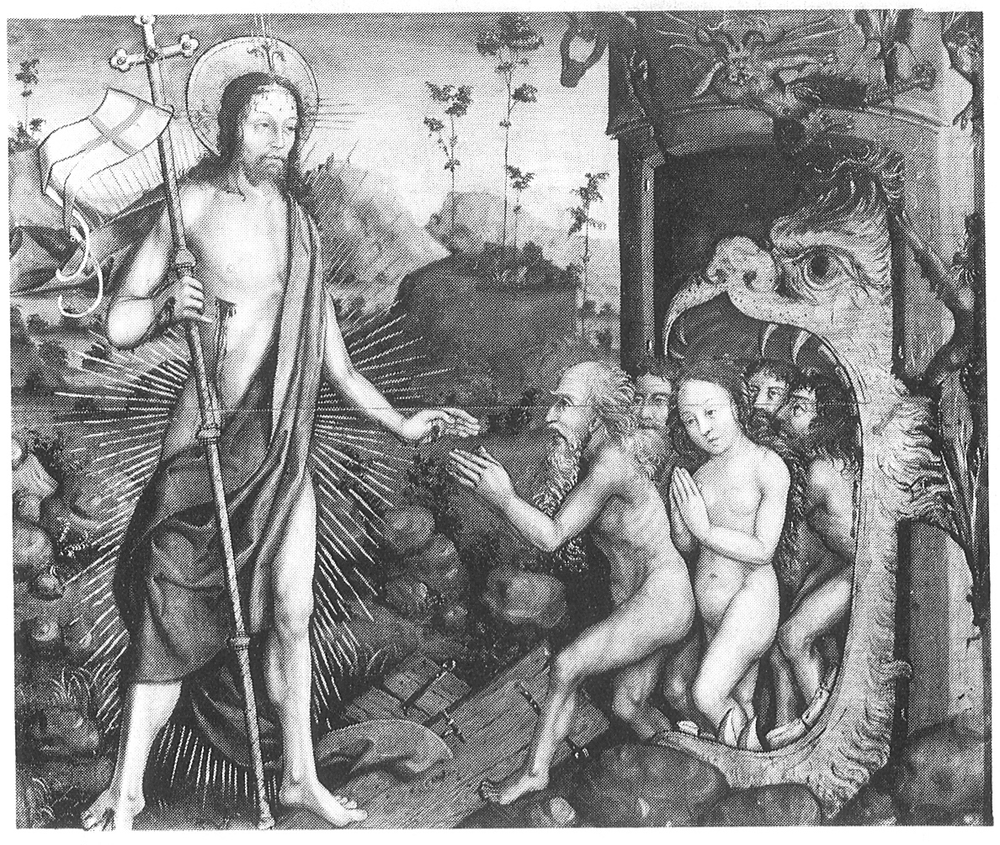

HoffmanEntheogenTheory
Created Wednesday 20 January 2021 (21-01-20_10-53-52)
@2021 @entheogens @religion
http://egodeath.com/EntheogenTheoryOfReligion.htm
The Entheogen Theory of Religion and Ego Death
by Michael Hoffman
Salvia Divinorum, Issue 4
Copyright © 2006-2007 Michael Hoffman. All rights reserved.
The Entheogen Theory of Religion and Ego Death explains what is revealed in religious revelation and in enlightenment, including the nature of personal control agency.
The essence and origin of religion is the use of visionary plants to routinely trigger the intense mystic altered state, producing loose binding of cognitive associations. This loose cognitive binding then produces an experience of being controlled by frozen block-universe determinism with a single, pre-existing, ever-existing future.
Experiencing this model of control and time initially destabilizes self-control power, and amounts to the death of the self that was conceived of as an autonomous control-agent. Self-control stability is restored upon transforming one's mental model to take into account the dependence of personal control on a hidden, separate thought-source, such as Necessity or a divine level that transcends Necessity.
Myth describes this mystic-state experiential insight and transformation. Religious initiation teaches and causes this transformation of the self considered as a control-agent, through a series of visionary-plant sessions, interspersed with study of perennial philosophy. Most modern-era religion has been a distortion of this standard initiation system, reducing these concepts to a weak interpretation that is based in the ordinary state of consciousness.
The Entheogen Theory of Religion
The main origin and ongoing wellspring of religion is the use of visionary plants. These plants include Psilocybe mushrooms, Henbane, Cannabis, Opium, Peyote, Salvia divinorum, and Amanita mushrooms.
Visionary plants have been commonly used around the world throughout the history of religion and culture (Hofmann, Schultes, & Ratsch 1992), including in the various forms of Western Esotericism (Heinrich 1994). Greek and Christian mythic-religious systems often refer to visionary plants (Ruck, Staples, & Heinrich 2001). Leading mystics throughout the history of various religions have used visionary-plant sessions on-demand, with mystic-state experiencing that was largely rationality-oriented (Merkur 2001).
Meditation, shamanic drumming, and liturgical ritual were developed as activities to do in the plant-induced dissociative state, not as methods of inducing the dissociative state in the first place.
The Origins of Christianity in Entheogenic Initiation
The extent of entheogen use throughout Christian history has barely been considered yet (Hoffman 2007). Early Christianity involved mystical, religious, visionary experiencing, including the experience of the transformative, transcendent power of the Holy Spirit at Eucharistic agape meals (Johnson 1998). Early Christian writings show familiarity with ecstatic mania, inspiration, elevated sobriety, and ‘drunkenness’ induced by ‘mixed wine’ (Nasrallah 2003).
The Jesus figure is portrayed in the New Testament as a spirit-possessed altered-state shamanistic healer (Davies 1995). The figure of Paul the Apostle is portrayed as a shamanistic mystic (Ashton 2000), and the apostles are portrayed as adepts in altered-state mystic experiencing (Pilch 2004).
Solving the riddle of the original mystic-metaphorical meaning of Christianity requires also understanding the surrounding metaphorical altered-state initiation systems throughout Christian history. These altered-state initiation systems that were related to Christianity, include Roman religion, Neoplatonism, Western Esotericism, and astral ascent mysticism.
The large window of the Legend of St. Eustace in Chartres cathedral shows many ‘mushroom trees’ and unambiguous depictions of mushrooms throughout its panels. Hundreds of depictions of mushrooms appear in Christian art.
The Sociopolitical Strategy of Canonical Christianity
The New Testament editors utilized the era’s standard mastery of mystic-state metaphor and the altered-state experience of communal unity to direct the Jewish mystic-metaphor system into the figure of Jesus. This combination of Jewish themes, mystic-state metaphor, and the communal altered-state unity experience enabled the ruling-class church leaders to profitably sweep together the various quasi-Christian groups. The early Catholic bishops claimed themselves to have been appointed as the administrators of the Eucharistic gatherings by Jesus, who they portrayed as having been around just long enough to commission them exclusively with all authority.
Jesus and all the apostles were entirely and strictly mythic, not historical individuals (Doherty 1999, Drews 1924). The figure of Paul served as a controverted authorial token that was used to endorse the positions of competing camps (Detering 1995). The authors and redactors of the writings attributed to Paul don’t mention any biographical information about the life of Jesus because the gospel story was a later, literary creation. The gospel story of the life of Jesus was based on many sources, including Roman imperial ruler cult, Josephus’ writings, and Hellenistic literature.
Mystic revelation about the nullity of self-will was routine in antiquity. Roman imperial theology utilized this routinized mystic-state revelation to legitimate the Roman sociopolitical arrangement. Christianity became popular as a polemical counter-narrative about how the entheogen-accessed mystic revelation should be used for sociopolitical concerns. The figure of the ‘king on the cross’ in the New Testament is a depiction of the mystic-state insight of non-autonomous control, in service of a rebuttal and alternative to Roman imperial theology.
The Altered State Was Integrated into Ancient Culture
The entheogenic altered state was integrated into culture, using metaphor to map all domains together. Altered-state experiencing served as a standard point of reference for banquets and parties, civic processions, punishment, release of captives, sport, taxation, and alliances.
A common standard banqueting tradition with reclining at table while drinking ‘mixed wine’ ran across many seemingly disparate cultural practices (Smith 2003). ‘Mixed wine’ was the central, reliable means of accessing the intense mystic altered state throughout antiquity. Ancient ‘mixed wine’ specifically meant visionary-plant mixtures (Ruck 1978), such as Psilocybe mushroom wine. If Electric Kool-Aid in an Acid Test type of gathering were switched with ‘mixed wine’ in a Hellenistic symposium, neither party would notice much difference.
Socrates’ initiation of elite youths outside official democratic channels carried political implications and risks, because ancient politics and religion were deliberately interlinked by mystic-state experiencing.
Modernity Is a Single-State Culture
The adept use and comprehension of metaphor faded after the battle between politicized Christianity and Scientism around 1700, leaving a long-term standoff between mystically neutered religious literalism versus exclusively ordinary-state-based Science. The culturally predominant type of religion in the modern era neutralized and reduced the traditional initiation system by a combination of non-transformative surface ritual and intellectual speculation based only in the ordinary cognitive state.
The modern cultural experience resulted from the predominance of the ordinary cognitive state. The lack of culturally integrated altered-state initiation caused the egoic mental world-model, which is based in only a single cognitive state, to become completely predominant.
Authentic initiation is widely present in modern culture, including art, literature, spirituality, and popular culture, but is not integrated into the official culture; for example, the song “Help!” written by John Lennon, the album Ride the Lightning by Metallica, and the Matrix movie series.
Freedom for Higher-Order Religion
Lower-order religion is derivative, limited to mundane conduct-of-life doctrine suited for the ordinary state of consciousness. The higher-order version of each religion involves transformation of personal control-agency concepts; revelation about control-system limits and dependence on the transcendent; and re-attribution of the origin of one’s will and thoughts.
The essence of religious freedom is specifically the freedom to reliably access mystic-state consciousness, as in early, house-church Eucharistic agape meals, the ancient banqueting tradition, the mystery religions, and symposium “drinking-party” associations. All of these mainstream cultural practices utilized mixtures containing visionary plants as their central sacrament.
Suppressing entheogens because of their danger amounts to a blanket illegalization of higher-order religion and primary religious experiencing. As long as modern culture forbids itself the true, ergonomic Eucharist, legislating against the entheogen-based ecstatic heart of religion, religious freedom is restricted to selecting among various brands of lower-order religion; higher-order religion is placed off-limits, out of reach.
The ever-expanding drug schedules directly conflict with the only kind of religious freedom that amounts to specifically religious freedom; that is, freedom to regularly and ergonomically access primary religious experiencing. The system of schedules is not from God, but is an invention that ignores the central role of visionary plants in religion, multi-state cognitive psychology, and the innate human drive to self-transcendence.
The Role of Democracy for Ecstatic Danger
The proper role for representative democracy regarding drugs is to work out how visionary plants and psychoactive substances are to be healthily integrated into mainstream culture, making dissociative-state religious initiation as ergonomic and as safe as possible. Drugs are not a problem to be eliminated and suppressed, but a means of maturing to be channeled.
The Supreme Court of the United States has recognized the legitimacy of Peyote and Ayahuasca in worship; these plants have the same effects as LSD and Psilocybe mushrooms, including causing the person’s power of will and power of self-control to become seized and then restored in a religiously transformed configuration.
The threat of the encounter with the power of the divine is, specifically, the threat of loss of control of one’s thoughts when studying self-knowledge in the ecstatic state. This inherent danger of entheogens is inherent in the encounter with the power that transcends our personal control of our will. This danger is mitigated by having a systematic model of personal control agency, in conjunction with mastering the skilled use of entheogens and understanding how past cultures have accommodated this danger. This necessary danger that is inherent in the encounter with the power of the divine is the gateway to mature religious knowledge.
Initiation as a Natural Developmental Sequence
Greek and non-modern cultures integrated a series of altered-state initiations. Initiation classically combines a series of visionary-plant sessions with learning perennial philosophy, followed by subsequent religiously integrated dissociation such as agape meals, festival banquets, and symposium parties. Entheogenic religious initiation was a prerequisite for symposium banqueting, so that participants were experienced. The banqueting tradition including symposium “drinking parties” included prayer and sacrifices. Social recreation and religious experiencing were not opposed activities.
People often use entheogens recreationally or with other non-religious intent, but are then surprised when they are overcome by the inherently entheogenic nature of the visionary plants. This unanticipated primary religious experience unexpectedly reveals how personal control depends on a source of thoughts outside one’s domain of control – a realization which is the gateway to religion. Young adults naturally seek initiatory transformation; the modern culture of Prohibition demands that they suppress this drive and permanently stunt their growth, settling into the non-initiate’s mindset for life, foregoing enlightenment and religious revelation.
The Entheogenic Future of Religion
Ergonomic tools, including a systematized model of personal agency and controllable use of entheogens, will make the mystic state common knowledge again in the post-modern era, but with a more explicit and systematic understanding than in antiquity. For example, Salvia divinorum makes the dissociative-state experience accessible, practical, and ergonomic. With the systematic explanation of ego death in hand, there is no need for heroic doses of psychoactives; moderate dosage is most effective.
New, culturally intelligible metaphor-systems will result from the culturally integrated use of entheogens to transform our conception of personal agency, including metaphors for self-control cybernetics.
The religio-political philosophy in the true spirit of the United States is to accept entheogens, accept culturally supported religious self-control breakdown and transformation, and accept the transcendent as the ultimate ruler or governor, but reject all claims that a given earthly system of government is divinely authorized or approved.
Hallucinogenic drug-plants will be revived as the authentic vehicle for the mystic state in communal religion, because they are immediately available to all people and are fully ergonomic. Christianity will reawaken to its original idea of applying mental worldmodel transformation based on the altered state toward providing an alternate sociopolitical configuration. Worldly systems of sociopolitical government typically use metaphors from mystic-state revelation to support a claim that they are divinely mandated. Christianity will return to its original New Testament purpose of serving as a counter-narrative to such attempts to abuse mystic-state revelation.
The Dissociative Cognitive State
Mental constructs are dynamic association matrixes of mental representations, held together by some degree of binding intensity. Ordinary-state cognition is settled and immersed in standard ruts of patterns and mental associations, such as trying to improvise on a musical instrument but ending up playing repeated patterns. Having a recognizable personality relies on such habitual patterns of dynamic mental construct associations, which are somewhat dynamic, but are restricted to a characteristic mode. Behind their mask of habit-based, pseudo-separate agency, everyone is Dionysus (that is, the ultimate control-source).
Entheogens cause their various phenomenological effects by loosening cognitive associations, which causes mental construct processing to be revealed as artificial representationalism and projection.
Ecstatic maenads mix visionary plants into wine in a wine-mixing bowl in front of a column and mask. The mask of Dionysus represents the illusory nature of a person's autonomous control-agency. The column behind the mask represents the timeless frozen block-universe that gives rise to the illusion of the individual person as an independent control-agent.
Restructuring Is Enabled by Loose Association Binding
Revolutionary conversion to a new theory or world-model involves structural transformation of concept networks and hierarchies, increased explanatory coherence, concept recombination, and rational mechanisms of paradigm conversion (Thagard 1992). The dissociative cognitive state loosens the mind’s associative binding, enabling deep revision of the interconnections between mental constructs. SEE ZK:USKO:Paradigmamuutos
Religion and myth are about dissociative-state experience, frozen-time determinism, self-control cybernetics, and metaphorical description of these. In intense primary religious experiencing, the mental model of self and world undergoes a standard, pre-configured expansion and transformation. The religiously transformed mental model takes into account the representational nature of experience, the experience of embeddedness in timeless unity, and the limited and dependent nature of self-control agency. This religious mental-model transformation is assisted by metaphors that describe these experiential insights in a pictorial form that is easy for the mind to retain.
Like the egoic cognitive structure, the transcendent mental model is an innate, pre-configured structure that is discovered and revealed, like the adolescent discovers the innate ability to climax. The ability to mystically climax is inbuilt, as is the mental model that is revealed, although the useful metaphors and systematic explanation that are necessary to retain the revealed mental structure must be a product of human effort.
The Splitting of Representation and Referent Layers
Salvia divinorum causes metaperception, which is the tangible perception of the layer of mental constructs that is the only thing directly presented to awareness. In the dissociative state, the vantage-point of awareness is raised, or stepped back a level, resulting in perceiving the cognitive workings of mental-construct processing and perception itself.
Mental constructs that are usually tightly associated separate from each other. The mental representation of each item also perceptibly separates from the represented referent; representations split into two perceptibly distinct layers. The representation layer is present to awareness like a tangible painting, while the referent layer is a remote, speculative realm that is pointed to but is perceptually absent, like a foreign country one has never directly seen (Hoffman 1996).
A person lives their entire subjectively experienced life inside a simulation that their own mind produces by presenting mental constructs to awareness. In metaperception, personal control-power and personal movement through space and time appear as synthetic mental constructs.
The Moving Control-Agent as Mental Construct
In the ordinary cognitive state, the mind generates the sensation of being an autonomous egoic agent wielding cross-time control-power while moving through time and space; this sensation is a projected, constructed, synthetic image and perspective.
The ego-entity exists as a real set of patterns and dynamics spread across time, but the ego is not solid, continuous, or autonomously powerful in the way the mind originally imagines. The self exists as a mental construct in the form of a time-slice series. This mental construct exists both as the entire series and as individual time-slices, with the continuant agent’s motion and control-power mentally projected from within each time-slice.
Seeing the illusory aspects of mental representation of oneself, and feeling static spacetime unity in the absence of the accustomed sense of personal solidity, can be experienced as death. This death-experience is the ending of personal existence, because the egoic-mode mind identifies one’s existence with the projected image and sensation of the moving continuant agent and its control-power.
Religious Effects of Salvia divinorum
Salvia divinorum is an ergonomic means of religious revelation and transformative, initiatory mental-model regeneration. Salvia produces fewer bodily effects than LSD; Salvia doesn't cause trembling, pupil dilation, temperature swing, or heart palpitation, as LSD does. The reduction of bodily effects, along with controllable dosage and short duration, makes Salvia ideal for studying cognitive dynamics about time, will, and control, including the nature of personal control agency. When Salvia is combined with understanding this model of ego death, one can be immediately and straightforwardly initiated into transcendent self-knowledge.
Salvia can cause intense undulation of vision and of the mental body-image similar to Laokoon, the seer and priest of Apollo, who was wrapped by the two serpents of Apollo and wrestled with them to his death. Perceptual undulation is also depicted in Jonah’s prayer in the whale, with the currents, waves, and breakers swirling around him and threatening to engulf him with turbulent waters, with seaweed wrapped around his head; and Medusa, with snakes moving around her head. The material plane itself, including one’s mental body-image, seems to undulate, not just one’s visual perception of it.
Compared to mushrooms, Salvia produces less visual and auditory distortion such as color smearing, blurring, surface waving, bending, tracers, and audio warbling. Salvia causes sensations of explicit representationalism, frozen timelessness, spacetime embeddedness and spatial merging, and inability to control and steer one’s thoughts. Awareness seems to sit still while thoughts arrive, presented and given to disempowered, passive awareness.
Because of the short duration of smoked Salvia, there isn’t the experience of a “voyage”, “long trip that plays out”, and “epic journey”. However, as with the longer-lasting entheogens, the same classic theme can occur: “There’s no turning away from any control-crash that might be sitting up ahead on the worldline.” The duration of smoked Salvia is too brief to enable transcendent, dissociative-state emotion.
Myth Describes Dissociative Phenomena
Myth is metaphorical description of the intense mystic-state experiencing that results from visionary plants. Myth reflects dissociative phenomenology or dissociative-state experiencing, not ordinary-state experiencing.
Visionary-plant states and otherworldly themes form the tradition of altered-state journeying (Culiano 1991). Many thematic categories of metaphorical descriptions have been used throughout history to describe dissociative-state sensations and experiences (Metzner 1986). Metaphoricity is a prime characteristic of the entheogenic, dissociative cognitive state (Shanon 2002).
The hunter Actaeon saw the goddess Artemis bathing naked, so she turned him into an animal, and his own hunting dogs tore him to pieces. The Actaeon hunting myth comprises the dissociative-state themes of seeing divinity (the higher or ultimate control-level), transgression of control-limits, and transformation of oneself. This myth also incorporates themes of mental searching, dissociative fragmentation of the mental body-image, and the death of the initial self-conception.
Depictions of Kali portray cognitive dis-integration of the mental body-image as dismemberment, and the sensation of splitting into multiple selves, with each of these sub-selves existing in an isolated time-slice.
Triptolemus is shown as a charioteer or steersman in a chariot that has wings and is propelled by Heimarmene-snakes, with a large cup of psychoactive mixed wine given to him by the goddess Demeter or Persephone.
The Block Universe and Frozen Worldlines
Time can be envisioned as a space-like dimension, forming a block universe that includes personal worldline threads that are frozen and unchanging (Rucker 1984), and are shaped like snakes. Each snake or thread represents a person’s entire subjective stream of thoughts during their entire life. Analytic philosophy and space-time physics have been brought together to construct a tenseless, static model of time (Oaklander & Smith 1994). This perspective is characteristic of altered-state perception. Y:2021:21-01-20 MUUTKIN KOKENEET SAMAN
Time as a Space-like Dimension
Salvia divinorum produces a strong sensation of spatial merging and unity. The static, frozen nature of time is perceived as a collection of present moments, with time as a space-like dimension. The mind forcefully and vividly perceives that space is experienced through the medium of present mental representations, rather than being simply present and directly perceived. The feeling of Salvia is strange yet familiar, returning the mind to home-base – the block-universe Origin. All times and locations feel equally nearby and connected to the present.
Metaphors for experiencing embeddedness in the frozen, timeless block-universe include the end of time, imprisonment, and fastening the body to physical objects. Eastern religious myth expresses experiencing the frozen timeless block universe and transcending the idea of autonomous moral agency. Such Eastern myths include the Ground of Being or Tao that flows everywhere including one’s mind, escaping the endless round of moral karma and its unbroken causal chain, and avoiding rebirth into a material, mortal body.
In the dissociative cognitive state, objects and the controlling ego-entity are explicitly perceived as extended across time. Objects and the self are perceptibly distributed along a fixed and pre-set stream of time-slices frozen into position, such that a person appears as a living statue made of a series of separate statues or image-frames in incrementally different poses.
Time is no longer perceived as a flow, but as a frozen expanse and positional relationship of stationary, distinct and separated time-slices. Mental constructs, including personal control-thoughts, are experienced as being permanently laid out along the time axis.
The Physical Fastening of All Thoughts and Actions
In the dissociative state, all actions anyone has done in the world, good and evil, are experienced as physically attached to one’s own arms, body, and train of thoughts that is frozen into spacetime.
Prometheus is chained looking out from the rock; Theseus and king Pirithous are fused into the banqueting bench in the kingdom ruled by Hades and Persephone; king Pentheus is caught up in the tree looking out; and Osiris is trapped in the coffin by his brother. Conceptually, these mythic figures are all physically connected to the cross Jesus is nailed to, together with his elect: dissociative-state initiates.
King Hades imprisoned Persephone’s would-be suitors (and abductors) by fusing them to a magical bench and binding them to it with snakes while bringing them ‘mixed wine’. It was possible for Heracles to free the divine hero Theseus, but Heracles had to leave king Pirithous behind, fused into the banqueting bench in Hades for eternity, because the whole world shook when Heracles pulled him. This myth describes the dissociative-state sensation of physical embeddedness in the timeless block-universe, followed by abandoning the former pseudo-sovereign model of one’s personal control agency.
Fixed Worldlines of Subjective Experiencing
A person’s entire subjective life consists of their stream of conscious experience. An experienced life is a worldline frozen and embedded in spacetime in the shape of a snake, or a thread woven and cut by the Fates to a predefined, finite length.
To be ‘bitten by a snake’, as in the allegory of Paul the Apostle after his shipwreck, means to perceive the fatedness of one’s entire stream of thoughts. Like Paul on the road to Damascus, the seer Balaam rode his donkey on a road to curse the Israelites, but ended up blessing them. Balaam had an unavoidable encounter with the angel of death on a narrow vineyard path with no room to turn away to the right or to the left. Balaam was permitted to proceed past the angel only upon acknowledging that he speaks the words God puts in his mouth. The perspective of timeless fatedness reveals that all words that anyone speaks ultimately originate from outside the region of one's personal control.
A house shrine in Pompeii shows a snake of pre-set inevitability reaching the sacrament placed on top of an altar. An initiate’s pre-set worldline of experiencing and thoughts reaches a point where the initiate ingests entheogens. This destined point in the initiate’s worldline was portrayed as a Heimarmene-snake that is drawn by divine Necessity to drink the entheogenic libation of psychoactive wine in the wine-mixing bowl or in a cup of mixed wine, or consume the psychoactive sacrificial cake on the sacrificial altar.
Banqueters on a bench are shown looking at a Heimarmene-snake ending up at their own cup of mixed wine.

John the Evangelist has been shown as blessing a cup of the Eucharistic sacrament shown as a snake.
A maenad, ecstatic follower of the god Dionysus, holds a snake, representing awareness of fatedness and the fixity of one’s entire stream of thoughts.
Sacrifice is predestined and frozen into spacetime, comparable to the labyrinth path leading the sacrificial youths to the Minotaur in the central lair every year, and comparable to a city’s festival procession past sacred landmarks to a sacrifice at an altar. When Perseus shows Medusa’s head covered with Heimarmene-snakes to king Polydectes and his followers at the feast with ‘mixed wine’, the king and the other governors are turned into stone, helplessly frozen.
Kwan Yin masterfully rides the fatedness-serpent through the turbulent sea, with a cup of visionary-plant elixir in hand.
Accommodation to Everything Being Pre-set
During the visionary-plant initiation, the feeling of being a control-agent moving through time and space is replaced by the sensation and perception of no-free-will. The mind adjusts its mental world-model to fit the transcendent perspective, which includes the experience of frozen-time block-universe determinism.
The Israelites rebelled against the Lord, so the Lord sent snakes which fatally bit them. When the remaining people told Moses they had sinned in speaking against the Lord, the Lord told Moses to put a brass snake on a pole, which the Israelites had to look at to prevent them from dying from these snake-bites. These themes indicate realizing personal non-control with respect to time. A pole represents time, because a pole’s shadow served as a clock. The snake’s shape and rigid composition represent one’s finite-length, pre-set worldline. ‘Fatal snake-bite’ indicates ego death upon seeing all one’s thoughts as timelessly pre-set and given. To be cured of snake-bite and made immune to it is to continue life after ego death, purified of misattribution of the source of one’s thoughts and power of will.
‘The chosen race of God’, ‘the elect’, ‘the immovable race’, and ‘double-predestination’ express the idea that all people are timelessly pre-determined but only some are destined to realize this. ‘The elect’ refers to the set of people who are destined to be experientially initiated into no-free-will, and ‘the lost’ refers to the set of people who are destined to remain under the delusion of autonomous personal control-power. Y:2021:21-01-20 MUUTKIN KOKENEET SAMAN
The wide-eyed Minoan snake goddess ominously wields and controls initiates’ predestined, snake-shaped worldlines.

The initiate’s eventual 2-level system of personal control can be represented as a divine winged snake that rules from above, interconnected with a personal pseudo-autonomous controller snake on the lower level.
Vertical, Timeless Determinism
In late antiquity, consciousness was centered around the doctrine and mystic-state experience of the pre-setness of future thoughts and occurrences. The central thematic concern of religions in the Hellenistic era was Heimarmene (Martin 1987), which means fatedness, Necessity, or timeless cosmic determinism. Modern thought considers some related issues, though only in a single cognitive state. For example, Philosophical Metaphysics investigates the related issues of tenseless time, fatedness, agent movement through space and time, and controller agents (Oaklander & Smith 1995).
The future is unchangeable and pre-set because of the static relation of control to the time dimension, and because it is largely an illusion that a person is a continuant agent who exercises power while moving through time.
Modern science introduces clockwork determinism and thereby reduces the person to an automaton; in reaction, Copenhagenist quantum mechanics aims to provide an emancipating alternative to the hidden-variables determinism of Einstein and Bohm. However, modern conceptions of determinism and causality are limited to intellectual speculation based in the ordinary cognitive state, so they habitually tend to envision time as a sequential flow.
Transcending Determinism Requires Two Jumps
Determinism is both a praised goal and a disparaged trap to escape, due to determinism-awareness being the intermediate but not final goal of religious mental transformation. Valentinian Gnosticism affirmed cosmic determinism but also transcended it, and formulated two contrasting schemes of thinking about moral culpability (Pagels 1992).
Simplified 2-stage initiation themes actually reflect a 3-stage progression that is centered around determinism. Mystic metaphor both endorses and disparages the realization of determinism, because determinism is only an intermediate destination on the path to salvific regeneration. The first demon or stage of egoic delusion to be cast out is the assumption of simple independent self-command and freewill. The second demon to be overcome is the mental model of cosmic determinism or fatedness, a model which is rationally coherent but raises the practical problem of control instability.

In Mark 9:14-29, Jesus exorcises the ego-demon from a youth supported by his father; these four figures are aspects of the psyche.
Fatedness and Control in Astral Ascent Mysticism
Heimarmene or universal fatedness was centrally important in ancient astrological cosmology (Barton 1994), and was a major theme in Hellenistic-Roman astral ascent mysticism and religion (Cumont 1960). Transcending astral fatedness involved ingesting holy food, ambrosial water, and astrological medicine (Fowden 1986).

Astral ascent mysticism centers around the dangerous gateway or “fatal” boundary crossing – the sphere of the fixed stars – representing the apprehension of Heimarmene and its control of one’s thoughts. The stars wind around the world in a spiral pattern over time; this pattern is depicted by the Heimarmene-snake wrapped around the cosmos, cosmic egg, or Mithraic lion-headed gatekeeper figure.
Saturn, as governor or gatekeeper of the outermost planetary sphere, rides in a serpent-drawn chariot and eats the child or youthful self-concept. The boundary of cosmic determinism is defined by the orbital sphere of Saturn and the sphere of the fixed stars. “Consuming the child” refers to giving up and repudiating one's initial conception of oneself as an autonomous control-agent. Sacrificing one’s “childish”, initial self-conception is the necessary price of passage across the cosmic determinism-boundary, to ascend into the transcendent heavens.
Ancient Jewish writings metaphorically describe mystic-state experiences, including the problem of how to get past various threatening gatekeepers that are encountered during ascent (Arbel 2003). Pre-modern Christianity held that the body (the lower self) was controlled by Fate, but that the regenerated spirit (the higher, ultra-transcendent part of oneself) was above Fate, residing outside the sphere of the fixed stars.

When harrowing hell and rescuing the elect from limbo, Christ tramples the gates of the underworld prison, which are shown crossed in an X shape. In the pre-modern multi-level cosmology, trampling the gates of the underworld is thematically equivalent to trampling the celestial cross, representing transcending cosmic Heimarmene. Limbo is the experience of how personal control-power is impotent in the face of cosmic determinism and fatedness.
The hidden transcendent thought-source has been depicted as a hand behind a cloud controlling the world-soul, whose spirit transcends material Necessity. The world-soul, in turn, wields a chain that controls creatures, who are subject to Fate.
Self-Control and the Hidden Source of Thoughts
The ego is the sense of being a metaphysically free, sovereign agent that originates and controls its own thoughts, actions, and movements of the will while moving through time and space.
Ego death is the cessation, in the intense mystic altered state, of the sense and feeling of being a control-wielding agent moving through time and space. The sensation of wielding control is replaced by the experience of being helplessly, powerlessly embedded in spacetime as purely a product of spacetime, with control-thoughts being perceptibly inserted or set into the stream of thought by a hidden, uncontrollable source.
The Goal of Understanding Ego Death
Ego death leaves one’s initial, youthful “lie” behind. The “lie” is the confused mental worldmodel which assumes that oneself is the ultimate creator of one’s thoughts, actions, future, and movements of the will. The goal of testing control in the altered state is not to act out the loss of control in any way, but rather, to gain fundamental self-knowledge and correction of self-frustrating error and confusion. The goal of putting control to the test is to understand the nature and limits of control across time by exploring ideas of loss of control and transcendent restabilization of control.
The promise of increased power over oneself leads to realizing the logical impossibility of that mode of power, but produces instead a viable alternate conception, of secondary-level, reflected power. The vexing attempt to gain properly functioning self-control while holding a confused model of self-control ceases. The misleading sensation that the time-voyaging continuant agent is the originator of its power of will is recognized as a conventional misperception and mental oversimplification.
The image of the Lone Soul in Purgatory shows the soul as imprisoned in chains, purified in flames, and lifted up in redemptive release by transcendent power.
In Gnosticism, the completed initiate belongs to the Immovable Race and is able to stand stably in the face of overwhelming, autonomy-undermining controllership that emanates from the hidden, primary control-level. Insights about the limitations of personal control-power result in a wounding of pride, but the mind is otherwise unharmed, and made more durable (or “imperishable”). A personal control system becomes compatible with transcendence, or becomes “divinely approved”, when it repudiates the assumption that it can depend on its own internal power to save itself during a control-limit violation.
Deliberately Postulating Coming Control-Loss
The religious path and method is to ingest entheogens; think about your self-control power; disprove the possibility of forceful cross-time control; then depend on transcendent power, rather than your own local power, to provide coherent self-control. This method of testing the limits of control transforms your ideas about self and control to conform to transcendent experiential dynamics, “conforming to the image of God”.
The efficient method of enlightenment about the dynamics of control-agency is to test self-control power by deliberately supposing that loss-of-control is lying fated on the worldline ahead, and then struggling to use one’s personal control-power to avoid that potentially given control-loss event. The dissociative state makes it easy to examine the dynamics and limits of control-agency while thinking outside of the ingrained perspective.
The ability of one’s immediate self to violate the accustomed desires or will of one’s overall cross-time self, including overriding the accustomed self-preservation restraints, disproves the impression that the time-voyaging continuant control-agent ever was in control as the originator of personal thoughts. Exploring the limits of control across time reveals that the true origin of the movements of the will the whole time was a hidden transcendent source other than the self conceived of as a time-voyaging continuant control-agent.
What’s revealed in religious revelation is that our self-control power has the potential to be visibly canceled, and that one’s control-thoughts are given by a more ultimate source of control-power. The mind is directly drawn up into heaven on Elijah’s whirlwind or fire-chariot, by deliberately thinking about being helplessly, inevitably, and irresistibly drawn into the thought of near-future loss of control, while in the dissociative state.
The Potential for Control Breakdown and Transformation
After drinking mixed wine at the Last Supper, in the garden of Gethsemane prior to the court trial, Jesus began to be deeply distressed, amazed, and fearful (Mark 14:33), saying like an initiate who had to poison the lower self, “Father, remove this cup from me; yet not what I will, but what Thou wilt.” The mind’s local control-agency becomes distressed and apprehensive about whether and how it can retain control, upon turning attention around, perceptibly recognizing its vulnerability to thought-coercion and control-instability, and seeing the illusory aspect of personal autonomous power.
The mind is accustomed to assuming that the cross-time phantom-self can wield power over each time-slice self in the near future. When this assumption is explicitly recognized and tested, the onset of self-control seizure occurs. Ever-tighter, more forceful application of rationality that’s premised on the assumption of wielding control-power across time cannot save the control-system from this seizure. Testing our control-power and discovering our dependent puppet-like status entails deliberate disproof and self-cancellation of cross-time control, which can threaten to lead to panic attack, seizure, and self-destructive control-chaos.
Relying on one’s conventional power of control-logic and will, when fully developed and perfected, leads to system lock-up – the self-cancellation of personal control power. Demonic reason taken to its full development creates an impossible mess and gets itself tangled up, paralyzed in its own net of reasoning about control, power, and will.
King Pentheus resisted Dionysus, who was an intruding foreign ruler coming in from outside the king’s domain. Dionysus’ mad, divine power was undermining king Pentheus’ ruling power as the established sovereign. When king Pentheus resisted this competing power, he was tricked into participating in an ecstatic-state initiation excursion, was lifted and caught up helplessly in a tree, and was defeated and torn to pieces by his mother and other raving Dionysus worshippers.
One’s role as the independent creator and controller of one’s thoughts was an illusion. The current time-slice self or time-voyaging continuant self is helpless to control or restrain the future time-slice selves while playing with the idea of having, keeping, or losing control; the result is like an army of lookalike time-slice selves, fighting against each other.
‘Idol worship’, ‘pride’, or ‘vanity’ is the assumption that the power of egoic control agency is real and substantial. “Pride before the fall” is the futile attempt to depend on that doomed pseudo-power configuration to save oneself from the catastrophic failure of cybernetic self-control, a failure which is inherently, systemically entailed.
Julius Caesar was authorized for power by his seizures, [???] and the bull in his military’s Mithraic mystery-cult was wounded in the side, so the figure of Jesus was shown as similarly authorized by the spear-wound in his side, and the figure of the apostle Paul was portrayed as suffering from seizures. The ability to make self-control seize or cancel itself dramatically is an afflicting thorn (2 Cor. 12:7-10), hole, or wound in our side, the innate cybernetic governance-failure through which the new, transformed life is born. The new transcendence-aware self is given birth through the pride-killing disproof-wound in the side.
The Transcendent Solution to Restoring Viable Control
A different approach and solution is required, to restore order from the chaos of trying to use a self-dependence that’s based on incoherent premises. This solution provides a more robust basis than reliance on personal power wielded by the semi-illusory conventional self. Something that transcends personal control-power logic is needed to provide an alternative to the seized, useless logical scheme of egoic control power. After being shown this cybernetically fatal potential, a rescuing miracle of transcendent magic arrives from outside the system of egoic control-power logic.
The mind’s transcendent potential kicks in, realizing that the logic of control-agency power originated by the phantom self cannot be the solution to the very problem that such an inaccurate configuration generated in the first place. One must put one’s reliance on a self-existing faith, compassion, heart, love, or benevolent Holy Spirit, which cannot have any ordinary rational control-logic basis and that one does not experience as a product of one’s own egoic control-power or will, but is consciously experienced as being given by the hidden source of thoughts.
Solving the problem of true and justified mental order of personal self-government instead of control-chaos comes through a transcendent Zen jump. Depending on the egoic system of reasoning, which is constructed around inherently self-frustrating premises, ultimately leads to control lock-up and a catastrophically ineffective self-cancellation of control. Buddha recognized that his destiny was to touch the ground in an act of compassion and harmonious integration with the unity of the Ground of Being, causing Mara and his army of demons to instantly disperse – then he experienced enlightenment.
Viable and coherent control is provided by recognizing that personal control depends on transcendent givenness of your thoughts by a mysterious hidden source that ultimately caused the control lock-up and that independently saves your controllership, restoring it in a newly coherent form. The hidden source of thoughts that provides a viable, transcendent personal control system is personified as a merciful and compassionate God.
The figure of Caesar was plugged into the routinized mystery-cult format utilizing ‘mixed wine’. The imperial mystery cult incorporated themes related to imperial government, and had initiation rites for mystai using ‘mixed wine’ heavily, along with symposium drinking parties (Pleket 1965). Political themes were intermixed with mystic-state experiencing, as was common in ancient culture.
The defeat of egoic autonomy and power in the mystic ecstatic state was similar to the defeat of rebellious nations. Caesar was positioned as divinely authorized and led by Jupiter to bring peace, prosperity, and stable government across the entire world. The imperial mystery cult used parallels between Caesar's pardon of the rebellious kings when they sacrificed to him in homage and obeisance, and the sudden calm and restoration of stability that follows the mind’s sacrifice of the egoic claim of wielding autonomous power.
Our control-power has the Judas capability, which is the ability to betray the illusory aspect of personal power, through divine, transcendent power-seizure. By betraying our illusion of sovereignty, our Judas potential thereby delivers our lower, “rebellious” claim of independent kingship-power over to the transcendent level of governing power.
In John 11, Lazarus is transcendently lifted up from ego-death control-power paralysis by Jesus as the representative of the separate, higher-level source of thoughts. Jesus told his disciples “Lazarus is dead, and for your sake I am glad I was not there, so that you may believe. But let us go to him.” Then Thomas (called Didymus, the twin) said to the rest of the disciples, “Let us also go, that we may die with him.”
Maria the Divine Shepherdess of Souls, Divina Pastora, as benevolent and trustworthy thought-provider rescues and protects the person from the direly threatening wolf, which is the threat of loss of control or hostile control-usurpation by the hidden thought-source. The mind begins with a system of thinking about personal control that assumes independence, but personal control is only pseudo-independent. After being transcendently moved out from that doomed system of logic, one experiences the joyful sense of relief and thankfulness. The person, as a time-voyaging locus of control, has been rescued from certain peril, from outside their own local resources of control-power.
Sin as Misattribution of Control-Thoughts
Upon initiation, the concept of ‘sin’ is reinterpreted and revised, producing a transformed mental model which understands ‘sin’ to be a logical error about the nature of control-agency and agent-culpability. Sin is a matter of understanding and meaning-shift. The secret of the kingdom of God has been given, but cloaked in double-meanings so that those on the outside may see and hear but not understand, lest they turn about and their sins be forgiven (Mark 4:12).
In mystic metaphor, misunderstanding moral agency is considered the fundamental sin and immorality; God was most angry about the king’s rebellious worship of idols that are fashioned out of created materials – a metaphor for taking pseudo-autonomous personal control-agency as though it were genuinely autonomous. Reformed theology affirms the predestination of who God gives salvific grace to, while holding to the moral culpability of created persons. This Augustinian compound model is not simply an inconsistent combination of beliefs; rather, it is a technique of metaphorical meaning-shifting that is bi-modal, designed to span and contrast the egoic and transcendent systems of thinking.
A person’s will appears to be originated and controlled by the time-voyaging continuant agent that’s projected out from each time-slice along the person’s timelessly frozen worldline. The conception of personal control agency that is built around this illusion is ‘sin’ and the ‘lie’.
Wrath, Compassion, and Making Peace
‘Wrath’ means the threat that Fate or blind, machine-like determinism is ultimately in control of your coming thoughts but is set against your claim to exert independent power over your thoughts.
Mystic-state ‘compassion’ and ‘rescue that narrowly averts divine wrath’ means that that which ultimately gives you your thoughts is intimately united with you and is good or benevolent toward you, bringing you into a harmonious, reconciled, integrated relationship with the compassionate and beneficent controller of all that happens, including your own near-future thoughts.
The wrath/compassion polarity is portrayed as paired deities of wrath and compassion in Tibetan Buddhism; dual traits of the Creator (justice and mercy); and Jesus as harsh righteous judge with Mary as compassionate intercessor. The god of battling and the goddess of love – Ares and Aphrodite (or Mars and Venus) – were caught together in a near-invisible net, producing the child Harmonia (or Concordia).
Jupiter Optimus Maximus means ‘all-good’ and ‘all-powerful’, as is hoped for from a protective deity when one is vulnerable to awareness of Heimarmene in the intense mystic altered state.
Mithras demonstrates that his arm wields control over the power of the bull’s shoulder. Sol is reconciled with Mithras in a pact, and given transcendent power. Sol becomes an authorized charioteer, steering the quadriga with Mithras, guided by Mercury (or Hermes), who is holding a Fatedness-snake on a time-pole.
Sacrificing to End Battling the Thought-Source
‘Sacrifice’ is a mental attitude of cooperative dependence on that which gives thoughts, your will having been overcome and made to will its own demise as an empty delusion, turned against itself by now-revealed transcendent power. Sacrifice offers up and hands over your claim to effective independent power, as opposed to battling against your near-future self and the inherently overpowering source of all thoughts and movements of will.
Sacrificing your autonomy-claim, acknowledging your dependency on that which ultimately gives you your thoughts, brings mental peace and harmony and calms turmoil, because you are relieved from increasing your attempt to grasp and secure power over your own power; relieved from testing the power of your autonomy and the limits of your self-control thoughts.
Roman sacrificial altars are typically shown with a libation of concentrated, psychoactive unmixed wine being poured on the altar, which opens up a channel to the gods, along with the sacrificial animal such as the unresisting, cooperative bull. The sacrificer pouring the libation has a cloth behind the head, representing the spiritual ecstatic state, where awareness is positioned outside of the usual mind, perceiving its functioning.
Mithras overpowering and sacrificing the bull represents the delusion of self-originated control-power being given over to the transcendent level, with Mithras’ arm wielding the bull’s shoulder and his knife piercing and fatally wounding it. The wound in the bull’s side indicates Mithras demonstrating his power over the bull’s control-power. Mithras wrestles and overpowers the initiate’s control of their will, reconfiguring their understanding of control-power to account for the transcendent givenness of one’s thoughts.
Sol represents the mind’s awareness, which in the dissociative state is positioned ecstatically outside the mind’s functioning. The mind is possessed and overtaken by Mithras. Pure awareness passively watches the sacrificial disproof of the mind’s claim to wield independent personal control-power.
A tauroctony fresco in a Mithraeum shows the self-command bull being sacrificed near the shoulder. A Heimarmene-snake is inevitably drawn toward ingesting the entheogenic blood; often the snake approaches a wine-mixing bowl below the bull instead. A blue-stemmed Psilocybe mushroom appears in Mithras’ leg and garment, with the stem proceeding through 7 steps, up to the stars. The billowing cape behind Mithras indicates the ecstatic state. The sphere of the fixed stars is shown on Mithra's cape, inside the underworld cave. The god forcefully pins the bull, who is paralyzed and unable to stand. Mithras’ feminine features indicate the soul abducted and married by divine power. Mithras turns to knowingly look back behind the conventional self-concept to see the source of thoughts and movements of the will.
Vertical Atonement for Rebellion-Guilt
Vicarious atonement entails a vertical shift upward of guilt and responsibility to a higher-level controller, not a horizontal shift sideways to a morally better person. A vertical 2-level legal and moral relationship applies to all controller/agent scenarios: master/slave, commander/soldier, potter/clay, puppetmaster/puppet, creator/creature, and virtual-world creator/virtual agent.
Releasing a prisoner who is a rebel slave (a false claimant to autonomy), and punishing a mock king in their stead by death sentence, is found in the Roman Saturnalia and in the mystic allegory of Jesus’ trial; the rebel Barabbas (son of father) is released.
The Jesus figure was portrayed in the New Testament as the earthly representation and manifestation of the Jewish creator God (Thompson 2001), who was defined as all-powerful and all-controlling. Jesus is held to be innocent in the sense of not himself rebelling against God; that is, he never mistook the pseudo-autonomy of personal control-agents as literal autonomy. However, given that he was the Creator’s representative figure within the created world, he was ultimately responsible or guilty for all instances of such ‘rebellion’ which did occur by other people.
The dissociative-state revelation that higher-order power stands over the source of our control-thoughts is described as rendering the initiate no longer under the sentence of death, making them mature, washed clean, perfected, imperishable, or possessing eternal life, in that they have already died as an autonomous moral agent, following the pattern metaphorically expressed in the figure of Jesus. “Anyone who follows me must deny himself and take up his cross, for whoever loses his life for me will find it.” (Matt. 10:38-39, 16 24-25; Mark 8:34-35; Luke 9:23-24)
Lucifer fell from heaven, as Adam fell, due to pride through the illusory power of his virtual free will. Justice that is consistent with this metaphorical meaning-mode requires that he suffer a virtual death-sentence for his rebellious autonomy-claim; this sin is “punished” in the appropriate sense through mystic-state ego death and thereby done away with. Justice about ultimate responsibility is thereby fulfilled, and the initial, youthful error about our independent self-command is corrected.
The Sacred Marriage
The sacred marriage or pact with the divine provides a transcendent personal control system that is viable and stable. The resulting personal control system is based on mature, refined understanding about personal control agency, instead of misperception and frustrating confusion. The sacred marriage integrates one’s personal control activity in the mundane realm with the transcendent realization that thoughts originate from outside one’s realm of control.
In the ancient Greek tradition, marriage incorporated the themes of abduction and death of the girl, together with entheogenic initiation (Ruck 1978). Similarly, Christ raptures-away and marries his Church, the initiated elect, as his bride.
Dionysus rides with the abducted and married soul, Ariadne, in Dionysus’ victory procession, in a chariot drawn by four mushroom-tigers.
The uncontrollable, hidden, higher-level controller abducts and overtakes your innermost locus of control-power, as though that innermost wellspring of your thoughts is your generative organ, and ego death is the climax of the source of thoughts. This rapture of the soul by the divine realm gives birth to the new self that is married to the higher controller. The sacred marriage of the visible and hidden levels of control, producing new life, is celebrated in the wedding banquet with entheogenic mixed wine.
Bibliography
Michael Hoffman has been developing the Cybernetic Theory of Ego Transcendence since 1985, including the maximal entheogen theory of religion; see Egodeath.com.
Arbel, V. Beholders of Divine Secrets: Mysticism and Myth in the Hekhalot and Merkavah Literature. Albany: SUNY, 2003.
Ashton, J. The Religion of Paul the Apostle. New Haven: Yale, 2000.
Balsekar, R. Who Cares? The Unique Teaching of Ramesh S. Balsekar. Redondo Beach: Advaita, 1999.
Barton, T. Ancient Astrology. London: Routledge, 1994.
Bryan, C. Render to Caesar: Jesus, the Early Church, and the Roman Superpower. New York: Oxford, 2005.
Collins, J. J. (editor), and M. Fishbane (editor). Death, Ecstasy, and Other Worldly Journeys. Albany: SUNY, 1995.
Crowley, M. Secret Drugs of Buddhism. Forthcoming, and presented at Entheogenesis Conference 2004.
Culiano, I. Out of This World: Otherworldly Journeys from Gilgamesh to Albert Einstein. Boston: Shambhala, 1991.
Cumont, F. Astrology and Religion among the Greeks and Romans. New York: Dover, 1960 (1912).
Davies, S. Jesus the Healer: Possession, Trance, and the Origins of Christianity. New York: Continuum, 1995.
Detering, H. Der Gefälschte Paulus; The Fabricated Paul: Early Christianity in the Twilight. Düsseldorf: Patmos, 1995.
Doherty, E. The Jesus Puzzle: Did Christianity Begin with a Mythical Christ? Challenging the Existence of an Historical Jesus. Ottawa: Canadian Humanist. 1999.
Drews, A. Die Petruslegende; The Legend of Saint Peter: A Contribution to the Mythology of Christianity. Frankfurt: Neuer Frankfurter, 1910, 1924.
Fishbane, M. The Kiss of God: Spiritual and Mystical Death in Judaism. Seattle: University of Washington, 1994.
Forte, R. (editor). Entheogens and the Future of Religion. San Francisco: Council on Spiritual Practices, 1997.
Fowden, G. The Egyptian Hermes: A Historical Approach to the Late Pagan Mind. Princeton: Princeton University, 1986.
Freke, T.; and P. Gandy. The Complete Guide to World Mysticism. London: Piatkus, 1997.
Grof, S. (editor), and C. Grof (editor). Spiritual Emergency: When Personal Transformation Becomes a Crisis. New York: Tarcher/Putnam, 1989.
Grof, S.; and C. Grof. Beyond Death: The Gates of Consciousness. London: Thames and Hudson, 1980.
Heinrich, C. Strange Fruit: Alchemy and Religion: The Hidden Truth. London: Bloomsbury, 1994.
Hoffman, M. A. (editor). Entheos: The Journal of Psychedelic Spirituality. Entheomedia.org, 2001-2002.
Hoffman, M. A., C. A. P. Ruck, and B. Staples. “The Entheogenic Eucharist of Mithras”. Entheos 2.1:13-46 (2002).
Hoffman, M. S. “Wasson and Allegro on the Tree of Knowledge as Amanita”. Journal of Higher Criticism, in press, 2007.
Hoffman, M. S. “The Bubble of Simulation: Subjective Experience as a Virtual Environment”. Fringe Ware Review 5:22-24, 1994.
Hofmann, A.; R. E. Schultes; and C. Ratsch. Plants of the Gods: Their Sacred, Healing and Hallucinogenic Powers. Rochester: Healing Arts, 1992 (1979).
Johnson, L. T. Religious Experience in Earliest Christianity: A Missing Dimension in New Testament Studies. Minneapolis: Augsburg, 1998.
Kubby, S. The Politics of Consciousness: A Practical Guide to Personal Freedom. Port Townsend: Loompanics, 1995.
Martin, L. H. Hellenistic Religions: An Introduction. New York: Oxford University, 1987.
Merkur, D. Gnosis: An Esoteric Tradition of Mystical Visions and Unions. Albany: SUNY, 1993.
Merkur, D. The Psychedelic Sacrament: Manna, Meditation, and Mystical Experience. Rochester: Park Street, 2001.
Metzner, R. The Unfolding Self: Varieties of Transformative Experience. Novato: Origin, 1997 (1986).
Nasrallah, L. An Ecstasy of Folly: Prophecy and Authority in Early Christianity. Cambridge: Harvard, 2003.
Oaklander, L. N. (editor), and Q. Smith (editor). The New Theory of Time. New Haven: Yale, 1994.
Oaklander, L. N., and Q. Smith. Time, Change and Freedom: An Introduction to Metaphysics. New York: Routledge, 1995.
Pagels, E. The Gnostic Paul: Gnostic Exegesis of the Pauline Letters. Harrisburg: Trinity, 1992 (1975).
Pleket, H. W. “An Aspect of the Emperor Cult: Imperial Mysteries.” Harvard Theological Review 58:331-47 (1965).
Pilch, J. J. Visions and Healing in the Acts of the Apostles: How the Early Believers Experienced God. Collegeville: Liturgical, 2004.
Ruck, C.; B. Staples; and C. Heinrich. The Apples of Apollo: Pagan and Christian Mysteries of the Eucharist. Durham: Carolina Academic, 2001.
Rucker, R. The Fourth Dimension: A Guided Tour of the Higher Universes. Boston: Houghton Mifflin, 1984.
Russell, D. Shamanism and the Drug Propaganda: Patriarchy and the Drug War. Camden: Kalyx, 1998.
Shanon, B. The Antipodes of the Mind: Charting the Phenomenology of the Ayahuasca Experience. New York: Oxford University, 2002.
Smith, D. E. From Symposium to Eucharist: The Banquet in the Early Christian World. Minneapolis: Fortress, 2003.
Taylor-Perry, R. The God Who Comes: Dionysian Mysteries Reclaimed. New York: Algora, 2003.
Thagard, P. Conceptual Revolutions. Princeton: Princeton University, 1992.
Thompson, M. M. The God of the Gospel of John. Grand Rapids: Eerdmans, 2001.
Ulansey, D. “The Eighth Gate: The Mithraic Lion-Headed Figure and the Platonic World-Soul”. Forthcoming; online.
Vernant, J-P.; and P. Vidal-Naquet. Myth and Tragedy in Ancient Greece. New York: Zone, 1988 (1972).
Wasson, R. G.; A. Hofmann, and C. Ruck. The Road to Eleusis: Unveiling the Secret of the Mysteries. Los Angeles: Hermes, 1998 (1978).
Watts, A. “Zen and the Problem of Control”, in This Is It and Other Essays. New York: Vintage, 1973 (1958).
Wegner, D. White Bears and Other Unwanted Thoughts: Suppression, Obsession, and the Psychology of Mental Control. New York: Guilford, 1989.
White, R. Nietzsche and the Problem of Sovereignty. Chicago: University of Illinois, 1997.
Williams, M. A. The Immovable Race: Gnostic Designation and the Theme of Stability in Late Antiquity. Leiden: Brill, 1997.
Copyright © 2006-2007 Michael Hoffman. All rights reserved.
Backlinks: V:2020:MurareskuImmortality:Kritiikkiä ZK:USKO:Juuret:Psykoaktiivit:Entheogen theory of religion